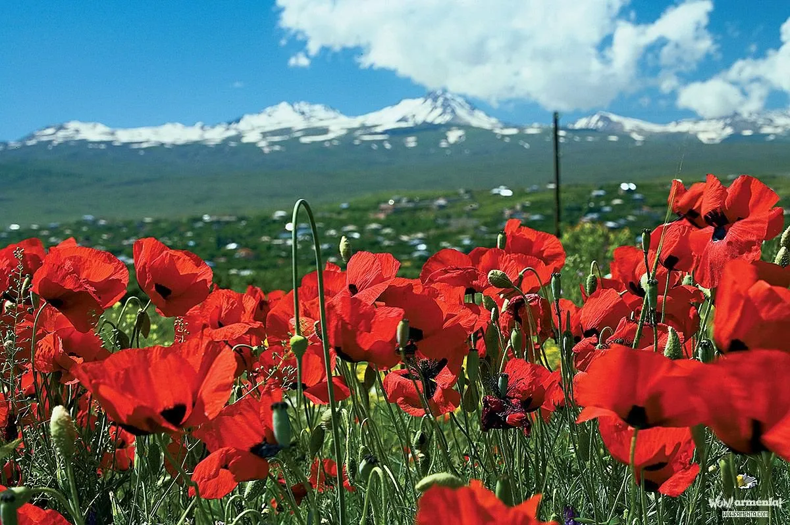
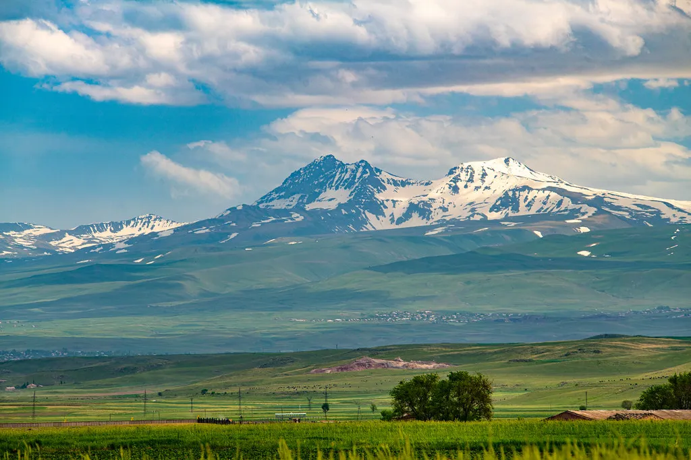
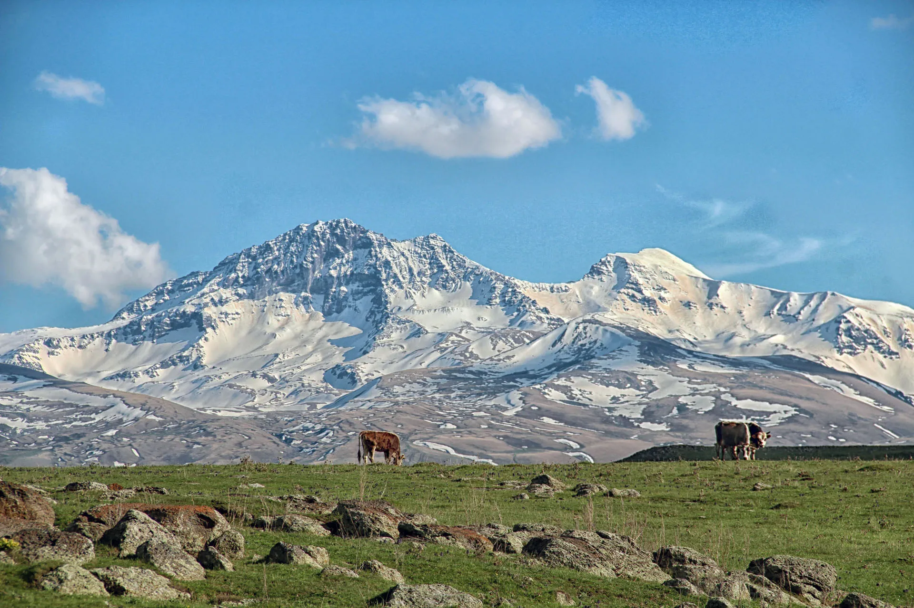
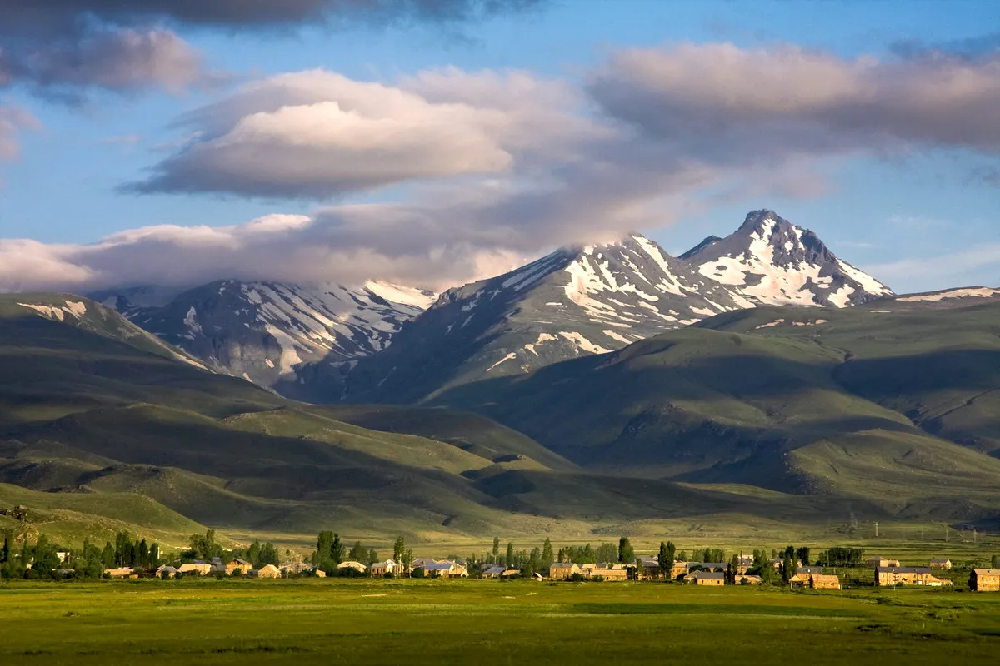
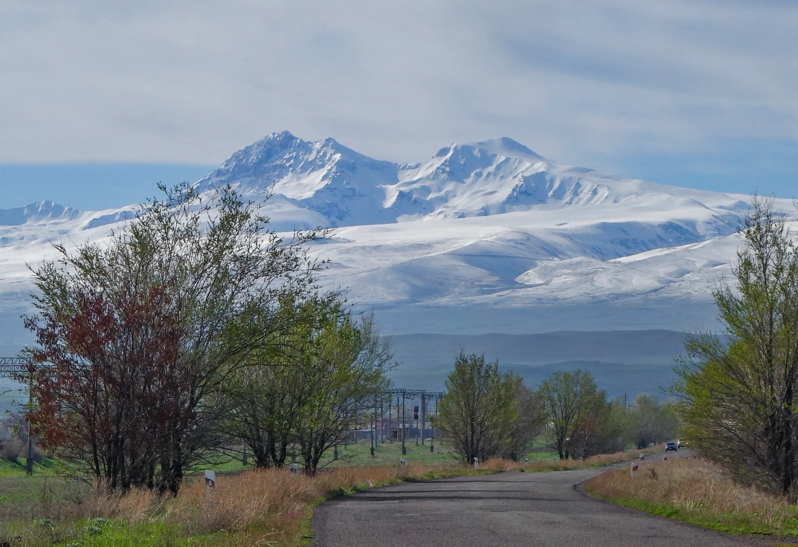
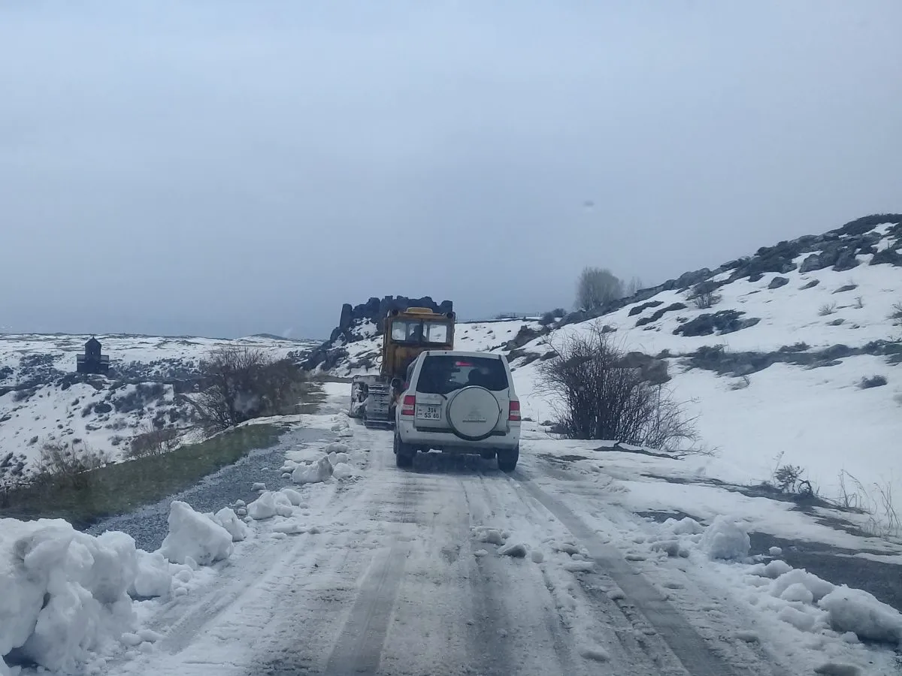
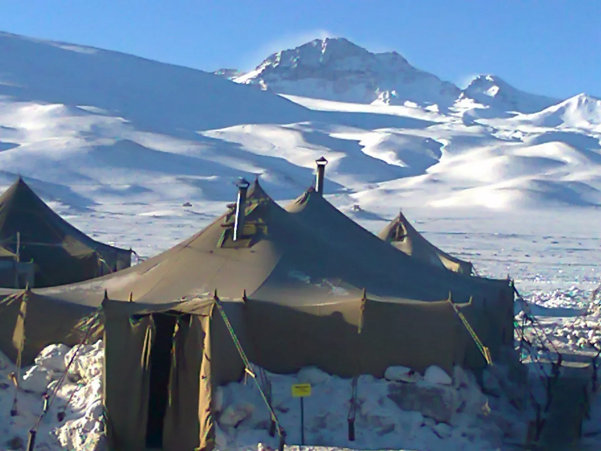
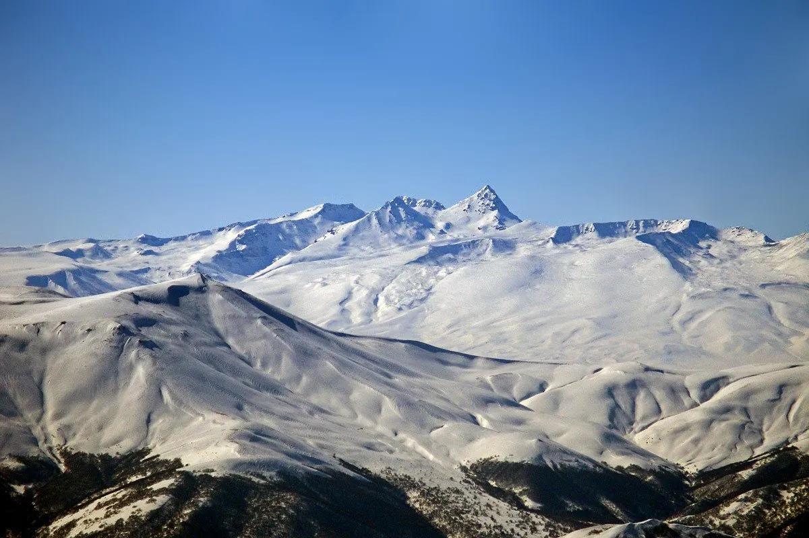
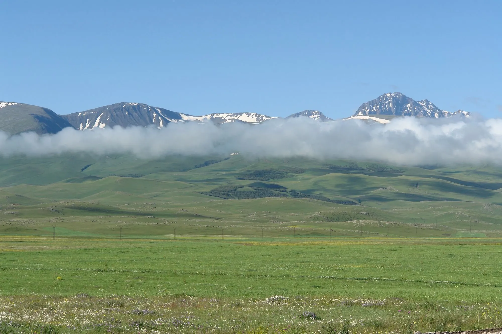
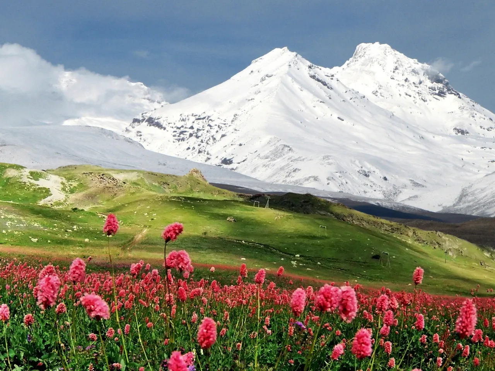

Արագածոտնի տարածքն աչքի է ընկնում բնակլիմայական պայմանների մեծ բազմազանությամբ: Մարզին բնորոշ է չափավոր ցամաքային, չոր ցամաքային, չափավոր ցամաքային և բարեխառն լեռնային կլիման:



Արարատյան դաշտին հարող հատվածներում ամռանը տաք է, ձմռանը՝ չափավոր ցուրտ: Եթե տարվա ամենատաք ամսվա՝ հուլիսի միջին ջերմաստիճանը լեռան ստորոտում լինում է +24 °C-ից ոչ պակաս, ապա բարձրլեռնային գոտում այն չի բարձրանում +6°C -ից։



Հունվարի միջին ջերմաստիճանը տատանվում է -5°C -ից մինչև -12°C: Այն դեպքում, երբ ամառը հովիտներում տևում է մինչև հոկտեմբեր ամիս, Արագածի մերձգագաթային հատվածում անգամ ամռանը հանդիպում են ձնաբծեր: Արագածի գագաթին հարակից վայրերում գրեթե շուրջ տարի ձմեռ է:



Մարզի հյուսիսային հատվածը և միջլեռնային գոգավորությունները աչքի են ընկնում մշտական քամիներով, հատկապես Փամբակի լեռնաշղթայի շրջանը, Ծաղկահովիտ գյուղի մեձակայքը, որտեղ կառուցվել է առաջին հողմային էլեկտրակայանը հանրապետությունում:

Մարզի տարածքն աչքի է ընկնում տեղումների տարեկան քանակի մեծ տատանումներով, որը նույն օրինաչափությամբ փոփոխվում է լանջերն ի վեր՝ 300 մմ-ից մինչև 1100 մմ: Արագածի գագաթամերձ շրջանում տեղումները տարեկան հասնում են 850-1100 մմ, իսկ ցածրադիր բարձրություններում (մինչև 1000 մ)՝ 300-320 մմ: Տարածքում բարձր է արևափայլի տևողությունը (տարեկան 2200-2600 ժամ):
